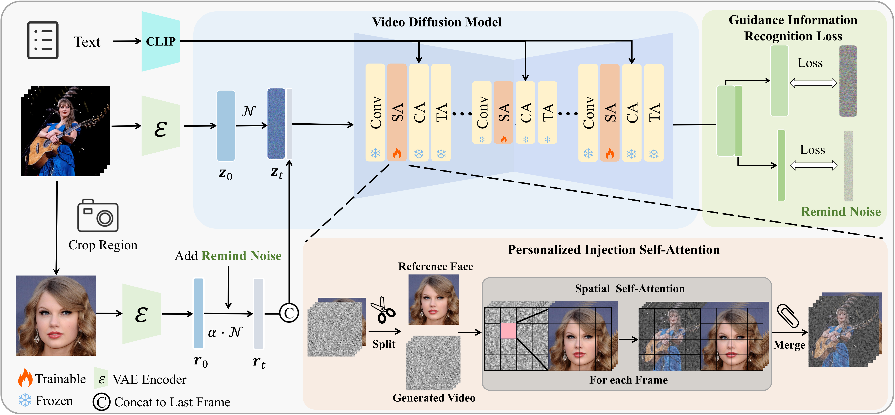
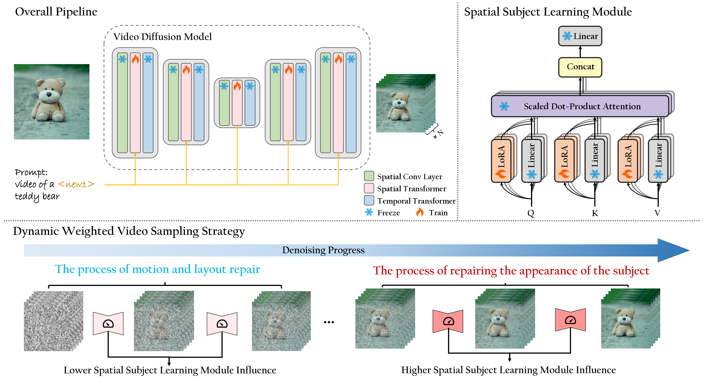

|
Tao Wu 吴涛
Phd Student
Zhejiang University
Email: taowucs@zju.edu.cn


|
|
About me
I am currently a third-year (2022-now) Ph.D. student in Zhejiang University (ZJU), advised by Prof. Li Xi.
I received bachelor's degree in Northwestern Polytechnical University (NWPU).
My research interests focus on AIGC, Video Generation, especially customized content generation.
Education Background
Preprints
MultiCrafter: High-Fidelity Multi-Subject Generation via Spatially Disentangled Attention and Identity-Aware Reinforcement Learning
Tao Wu*, Yibo Jiang*, Yehao Lu, Zhizhong Wang, Zeyi Huang, Zequn Qin, Xi Li†
Arxiv, 2025.09

VideoMaker: Zero-shot Customized Video Generation with the Inherent Force of Video Diffusion Models
Tao Wu*, Yong Zhang*, Xiaodong Cun*, Zhongang Qi†, Junfu Pu, Huanzhang Dou, Guangcong Zheng, Ying Shan, Xi Li†
Arxiv, 2024.12
Publications

CustomCrafter: Customized Video Generation with Preserving Motion and Concept Composition Abilities
Tao Wu, Yong Zhang†, Xintao Wang, Xianpan Zhou, Guangcong Zheng, Zhongang Qi, Ying Shan, Xi Li†
AAAI, 2025
SphereDiffusion: Spherical Geometry-Aware Distortion Resilient Diffusion Model
Tao Wu*, Xuewei Li*, Zhongang Qi†, Di Hu, Xintao Wang, Ying Shan, Xi Li†
AAAI, 2024
SGAT4PASS: Spherical Geometry-Aware Transformer for PAnoramic Semantic Segmentation
Xuewei Li*, Tao Wu*, Zhongang Qi, Gaoang Wang, Ying Shan, Xi Li†
IJCAI, 2023
RealCam-I2V: Real-world Image-to-video Generation with Interactive Complex Camera Control
Teng Li, Guangcong Zheng, Rui Jiang, Tao Wu, Yehao Lu, Yining Lin, Xi Li†
ICCV, 2025
GAMA-Pose: Graph-Aware Multi-representation Aggregation for 3D Human Pose Estimation
Songran Zhou, Tao Wu, Xuewei Li, Xiubo Liang, Naye Ji, Xi Li†
ACM Transactions on Multimedia Computing, Communications and Applications(TOMM)
Uncertainty-Aware Scene Graph Generation
Xuewei Li, Tao Wu, Guangcong Zheng, Yunlong Yu, Xi Li†
Pattern Recognition Letters(PRL), 2023